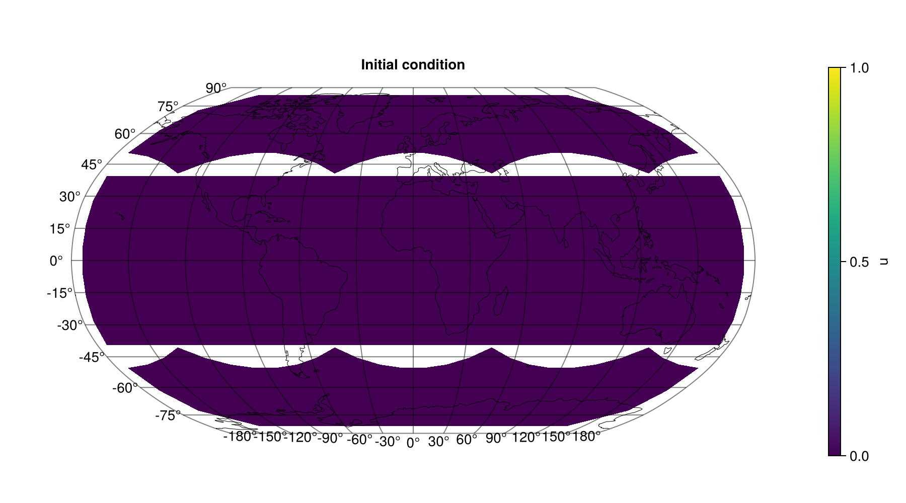
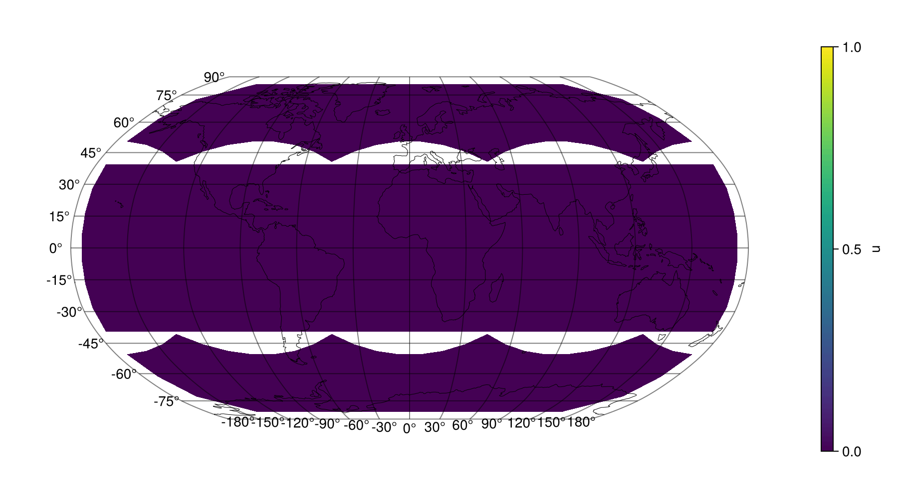

Tutorial: Diffusion on the Sphere
This tutorial simulates diffusion on the cubed sphere using the full ModelingToolkit integration — you write the PDE, and discretize converts it into an ODE system that can be solved with any SciML solver.
Problem setup
The diffusion equation on the sphere is:
\[\frac{\partial u}{\partial t} = \kappa \left( \frac{\partial^2 u}{\partial \lambda^2} + \frac{\partial^2 u}{\partial \varphi^2} \right)\]
where $\lambda$ and $\varphi$ are longitude and latitude, and $\kappa$ is the diffusion coefficient. The library automatically maps this notation to the covariant Laplacian on the cubed-sphere grid.
Step 1: Define the PDE
using EarthSciDiscretizations
using ModelingToolkit
using ModelingToolkit: t_nounits as t, D_nounits as D
using Symbolics
using DomainSets
using OrdinaryDiffEqDefault
using SciMLBase
@parameters lon lat
@variables u(..)
Dlon = Differential(lon)
Dlat = Differential(lat)
κ = 0.1 # diffusion coefficient
eq = [D(u(t, lon, lat)) ~ κ * (Dlon(Dlon(u(t, lon, lat))) + Dlat(Dlat(u(t, lon, lat))))]
bcs = [u(0, lon, lat) ~ exp(-10 * (lon^2 + lat^2))] # Gaussian blob at (0,0)
domains = [t ∈ Interval(0.0, 0.5),
lon ∈ Interval(-π, π),
lat ∈ Interval(-π/2, π/2)]
@named pdesys = PDESystem(eq, bcs, domains, [t, lon, lat], [u(t, lon, lat)])Step 2: Discretize and solve
Nc = 8 # C8 resolution (6 × 64 = 384 cells)
disc = FVCubedSphere(Nc; R=1.0)
prob = discretize(pdesys, disc)
sol = solve(prob)
println("Retcode: ", sol.retcode)
println("Grid cells: ", 6 * Nc^2)
println("Timesteps: ", length(sol.t))Retcode: Success
Grid cells: 384
Timesteps: 4That's the entire workflow: define a PDE with ModelingToolkit, create a FVCubedSphere discretization, and call discretize. The library handles grid construction, spatial derivative replacement, initial condition projection, and ODE system assembly automatically.
Step 3: Visualize the result
using CairoMakie, GeoMakie
grid = CubedSphereGrid(Nc; R=1.0)
# Extract solution at a given time using symbolic indexing
u_sym = first(@variables u(t)[1:6, 1:Nc, 1:Nc])
function get_snapshot(sol, u_sym, grid, tidx)
Nc = grid.Nc
q = zeros(6, Nc, Nc)
for p in 1:6, i in 1:Nc, j in 1:Nc
q[p, i, j] = sol[u_sym[p, i, j]][tidx]
end
return q
end
function plot_cubed_sphere(grid, q; title="", colorrange=nothing)
Nc = grid.Nc
cr = isnothing(colorrange) ? (minimum(q), maximum(q)) : colorrange
fig = Figure(size=(900, 500))
ga = GeoAxis(fig[1, 1]; dest="+proj=robin", title=title)
for p in 1:6
surface!(ga, rad2deg.(grid.lon[p, :, :]), rad2deg.(grid.lat[p, :, :]),
zeros(Nc, Nc); color=q[p, :, :], shading=NoShading,
colormap=:viridis, colorrange=cr)
end
lines!(ga, GeoMakie.coastlines(); color=:black, linewidth=0.5)
Colorbar(fig[1, 2]; colormap=:viridis, colorrange=cr, label="u")
fig
end
q_initial = get_snapshot(sol, u_sym, grid, 1)
fig = plot_cubed_sphere(grid, q_initial; title="Initial condition", colorrange=(0, 1))
fig
q_final = get_snapshot(sol, u_sym, grid, length(sol.t))
fig = plot_cubed_sphere(grid, q_final; title="Final state (t=$(sol.t[end]))",
colorrange=(0, 1))
figStep 4: Animate
# Collect all cell-center coordinates for scatter plot animation
lons_all = [rad2deg(grid.lon[p, i, j]) for p in 1:6 for i in 1:Nc for j in 1:Nc]
lats_all = [rad2deg(grid.lat[p, i, j]) for p in 1:6 for i in 1:Nc for j in 1:Nc]
fig = Figure(size=(900, 500))
ga = GeoAxis(fig[1, 1]; dest="+proj=robin")
color_obs = Observable(vec(q_initial))
scatter!(ga, lons_all, lats_all; color=color_obs, colormap=:viridis,
colorrange=(0, 1), markersize=8)
lines!(ga, GeoMakie.coastlines(); color=:black, linewidth=0.5)
Colorbar(fig[1, 2]; colormap=:viridis, colorrange=(0, 1), label="u")
frame_indices = range(1, length(sol.t), length=min(20, length(sol.t))) .|> round .|> Int |> unique
record(fig, joinpath(@__DIR__, "diffusion.gif"), frame_indices; framerate=5) do tidx
q = get_snapshot(sol, u_sym, grid, tidx)
color_obs[] = vec(q)
end
What happened under the hood
When you call discretize(pdesys, disc):
- A
CubedSphereGridis constructed with the specified resolution - For each PDE unknown
u(t, lon, lat), a discrete state arrayu(t)[1:6, 1:Nc, 1:Nc]is created - The PDE equations are walked symbolically — each spatial
Differentialis replaced with a finite-difference stencil operating on the discrete array - Initial conditions from the BCs are evaluated at each grid cell's (lon, lat)
- The resulting ODE system is compiled by ModelingToolkit and wrapped in an
ODEProblem
The solver then integrates the ODE system using any algorithm from the DifferentialEquations.jl ecosystem (Tsit5, Rodas5, etc.).